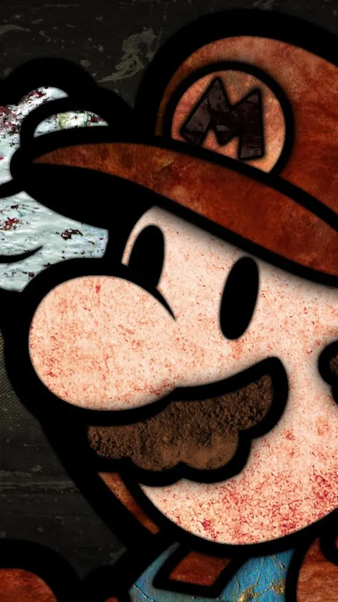

A is a wireless handheld device that allows users to make and receive calls. ... Also, while mobile phones used to be mainly known as “cell phones” or cellular phones, today's mobile phones are more commonly called “smartphones” because of all of the extra voice and data services that they offer.
The iPhone is a smartphone made by Apple that combines a computer, iPod, digital camera and cellular phone into one device with a touchscreen interface. ... While it was not considered the first smartphone, the iPhone has helped drive the global shift to mobile computing among both consumers and businesses.
OnePlus was founded on 16 December 2013 by former Oppo vice-president Pete Lau and Carl Pei.[7] According to Chinese public records, OnePlus' only institutional shareholder is Oppo Electronics.[4] Lau denied that OnePlus was a wholly owned subsidiary of Oppo and stated that Oppo Electronics and not Oppo Mobile (the phone manufacturer) is a major investor of OnePlus and that they are "in talks with other investors",[8] although OnePlus has confirmed it uses Oppo's manufacturing line and shares part of the supply chain resources with Oppo.
